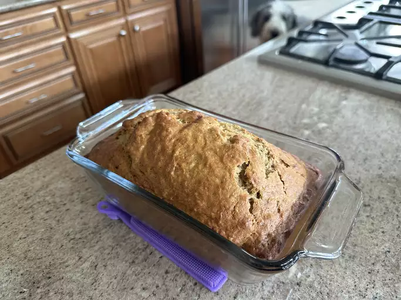

Banana Banana Bread

Photo of Banana Banana Bread.
In this recipe we will make the famous Banana Banana Bread, according to
Allrecipes.com.
The Banana Banana Bread is moist, delicious and
filled with banana flavor.
Ingredients
- 2 cups all-purpose flour
- 1 teaspoon baking soda
- ¼ teaspoon salt
- ¾ cup brown sugar
- ½ cup butter
- 2 large eggs, beaten
- 2 ⅓ cups mashed overripe bananas
Steps
- Preheat the oven to 350 degrees F (175 degrees C).
- Lightly grease a 9x5-inch loaf pan.
- Combine flour, baking soda, and salt in a large bowl.
- Beat brown sugar and butter with an electric mixer in a separate large bowl until smooth.
- Stir in eggs and mashed bananas until well blended.
- Stir banana mixture into flour mixture until just combined.
- Pour batter into the prepared loaf pan.
- Bake in the preheated oven until a toothpick inserted into the center comes out clean, about 60 minutes.
- Let bread cool in pan for 10 minutes, then turn out onto a wire rack to cool completely.
Conclusion
You now have a Banana Banana Bread of your own. Enjoy it while it lasts... ;)
HomePage